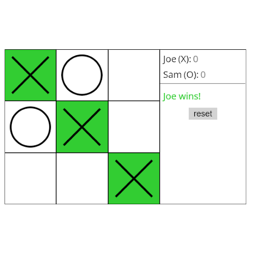
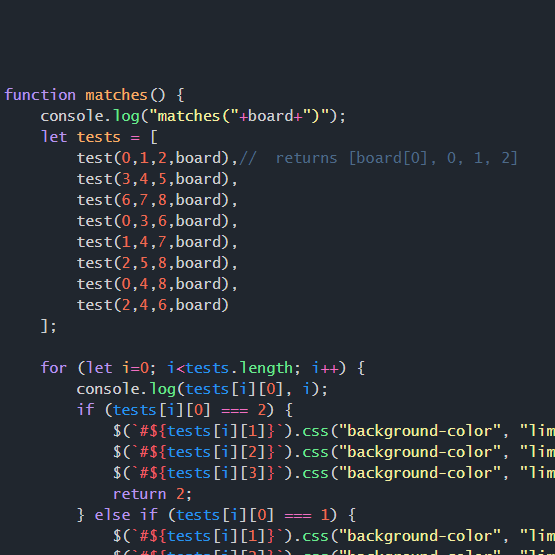

<div class="page_container">
    <div class="work block">
        <div class="header">My Work</div>

        <div class="page_spacer"></div>
        <div class="page_spacer"></div>

        <div class="projects">
            <div class="project" *ngFor="let project of projects">
                <div class="project__title">{{ project.title }}</div>

                <div class="project__content"> 
                    <div class="info text">
                        {{ project.info }}
                        <a href="{{ project.link }}" class="project__button">See It Here</a>
                    </div>

                    <div class="images">
                        
                        
                    </div>                    
                </div>
                <div class="page_spacer"></div>
            </div>

        </div>
    </div>
</div>

<!--         
        <div class="header--2"></div>
        <div class="group">
            <div class="group__paragraph">
                This was a side project that I made for myself during my first year work experience.
                I was required to learn jQuery in order to create a web app for a client. 
                I decided to learn the language by creating fun little web app games. 
                This was really simple to create, the challenge was getting the result of both hands thrown and designing a clean UI for the simple app. 
                I’m happy with the result of it, although it’s small, it helped me learn jQuery significantly.
            </div>
            <div class="group__images">
                
                
            </div>
    
        </div> -->
<!--     
        <div class="header--2">jQuery Tic Tac Toe</div>
        <div class="group">
            <div class="group__paragraph">
                I created this small app during work experience as well. 
                This was also used to help me learn jQuery in the span of about a week, I could work on it while waiting for the client to reply. 
                The challenge for this app was the UI design and getting the app to check if a user has won. 
                I was glad I was able to complete it, satisfied with the result, although I believe I’ve become a much better coder since then.
            </div>
            <div class="group__images">
                
                
            </div>
        </div>
    
        <div class="header--2">Business Card Design</div>
        <div class="group">
            <div class="group__paragraph">
                This is a design for a future business card that I want to use to relay my contact information to potential employers.
                I wanted a design that sticks out, looks professional and I would be proud of. 
                It’s still in the process of finding the right materials to print on and some color changes to make it CMYK compatible. 
                I’m not done with the design yet, as there are always small details that I feel need changing, I’m always open to advice.
            </div>
            <div class="group__images">
                
            </div>
        </div>
    
        <div class="header--2">LinkedIn Profile Background</div>
        <div class="group">
            <div class="group__paragraph">
                I created this for a linkedIn profile assignment. 
                I just wanted a simple blue wave pattern that looked simple and professional. 
                It’s on my LinkedIn profile now, so I’m proud of the result, 
                although I feel like it could have more detail in it.
            </div>
            <div class="group__images">
                
            </div>
        </div>
    
        <div class="header--2">Old Portfolio Background Design</div>
        <div class="group">
            <div class="group__paragraph">
                I created this because I wanted more experience in Adobe Illustrator, 
                so I created a nice abstract design for a portfolio assignment for a User Interface design course. 
                I created it using a tutorial I found on youtube. 
                The end result was pretty neat, although it was hard to design 
                around it due to the difference in contrast it had.</div>
            <div class="group__images">
                
            </div>
        </div> -->